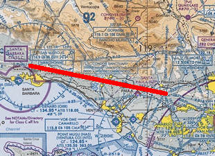

Flight Planning Calculator
The flight planning calculator consolidates the calculations for several E6B calculations into one location, to simplify calculating each leg of a flight plan. The individual calculations that are performed include performing a wind triangle calculation to find ground speed and heading for course, the fuel burn, and estimated time of arrival for each leg.
Sample Problem
You are flying from the Fillmore VOR north-west of the Los Angeles area to the San Marcus VOR just north of Santa Barbara. The true course is 282° and the distance is 45nm. Your Cessna has a cruising true air speed of 110 knots, and consumes 8 gallons/hour. From your weather briefing you discover the winds aloft in the area is 120° at 15 knots, and the magnetic variation is 13° east.
Answers:
Entering the data you discover:
| True Heading | 280 |
| Magnetic Course | 269 |
| Magnetic Heading | 267 |
| Ground Speed | 124 kt |
| ETA | ~ 22 min |
| Fuel Required | ~ 3 gal |